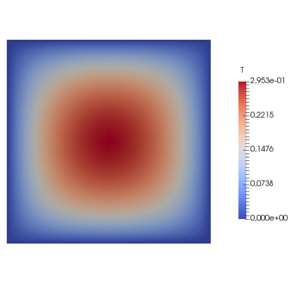

Heat equation

Figure 1: Temperature field on the unit square with an internal uniform heat source solved with homogeneous Dirichlet boundary conditions on the boundary.
This example is also available as a Jupyter notebook: heat_equation.ipynb.
Introduction
The heat equation is the "Hello, world!" equation of finite elements. Here we solve the equation on a unit square, with a uniform internal source. The strong form of the (linear) heat equation is given by
\[ -\nabla \cdot (k \nabla u) = f \quad \textbf{x} \in \Omega,\]
where $u$ is the unknown temperature field, $k$ the heat conductivity, $f$ the heat source and $\Omega$ the domain. For simplicity we set $f = 1$ and $k = 1$. We will consider homogeneous Dirichlet boundary conditions such that
\[u(\textbf{x}) = 0 \quad \textbf{x} \in \partial \Omega,\]
where $\partial \Omega$ denotes the boundary of $\Omega$. The resulting weak form is given given as follows: Find $u \in \mathbb{U}$ such that
\[\int_{\Omega} \nabla \delta u \cdot \nabla u \ d\Omega = \int_{\Omega} \delta u \ d\Omega \quad \forall \delta u \in \mathbb{T},\]
where $\delta u$ is a test function, and where $\mathbb{U}$ and $\mathbb{T}$ are suitable trial and test function sets, respectively.
Commented Program
Now we solve the problem in Ferrite. What follows is a program spliced with comments. The full program, without comments, can be found in the next section.
First we load Ferrite, and some other packages we need
using Ferrite, SparseArraysWe start by generating a simple grid with 20x20 quadrilateral elements using generate_grid. The generator defaults to the unit square, so we don't need to specify the corners of the domain.
grid = generate_grid(Quadrilateral, (20, 20));Trial and test functions
A CellValues facilitates the process of evaluating values and gradients of test and trial functions (among other things). To define this we need to specify an interpolation space for the shape functions. We use Lagrange functions based on the two-dimensional reference quadrilateral. We also define a quadrature rule based on the same reference element. We combine the interpolation and the quadrature rule to a CellValues object.
ip = Lagrange{RefQuadrilateral, 1}()
qr = QuadratureRule{RefQuadrilateral}(2)
cellvalues = CellValues(qr, ip);Degrees of freedom
Next we need to define a DofHandler, which will take care of numbering and distribution of degrees of freedom for our approximated fields. We create the DofHandler and then add a single scalar field called :u based on our interpolation ip defined above. Lastly we close! the DofHandler, it is now that the dofs are distributed for all the elements.
dh = DofHandler(grid)
add!(dh, :u, ip)
close!(dh);Now that we have distributed all our dofs we can create our tangent matrix, using allocate_matrix. This function returns a sparse matrix with the correct entries stored.
K = allocate_matrix(dh)441×441 SparseMatrixCSC{Float64, Int64} with 3721 stored entries:
⎡⠻⣦⡀⠀⢧⠀⠀⠀⠀⠀⠀⠀⠀⠀⠀⠀⠀⠀⠀⠀⠀⠀⠀⠀⠀⠀⠀⠀⠀⠀⠀⠀⠀⠀⠀⠀⠀⠀⠀⠀⎤
⎢⠀⠈⠻⣦⠈⢧⠀⠀⠀⠀⠀⠀⠀⠀⠀⠀⠀⠀⠀⠀⠀⠀⠀⠀⠀⠀⠀⠀⠀⠀⠀⠀⠀⠀⠀⠀⠀⠀⠀⠀⎥
⎢⠉⠓⠦⣄⡻⣮⡳⣄⠀⠀⠀⠀⠀⠀⠀⠀⠀⠀⠀⠀⠀⠀⠀⠀⠀⠀⠀⠀⠀⠀⠀⠀⠀⠀⠀⠀⠀⠀⠀⠀⎥
⎢⠀⠀⠀⠀⠙⢮⡻⣮⡳⣄⠀⠀⠀⠀⠀⠀⠀⠀⠀⠀⠀⠀⠀⠀⠀⠀⠀⠀⠀⠀⠀⠀⠀⠀⠀⠀⠀⠀⠀⠀⎥
⎢⠀⠀⠀⠀⠀⠀⠙⢮⡻⣮⡳⣄⠀⠀⠀⠀⠀⠀⠀⠀⠀⠀⠀⠀⠀⠀⠀⠀⠀⠀⠀⠀⠀⠀⠀⠀⠀⠀⠀⠀⎥
⎢⠀⠀⠀⠀⠀⠀⠀⠀⠙⢮⡻⢎⡳⣄⠀⠀⠀⠀⠀⠀⠀⠀⠀⠀⠀⠀⠀⠀⠀⠀⠀⠀⠀⠀⠀⠀⠀⠀⠀⠀⎥
⎢⠀⠀⠀⠀⠀⠀⠀⠀⠀⠀⠙⢮⡻⣮⡳⣤⠀⠀⠀⠀⠀⠀⠀⠀⠀⠀⠀⠀⠀⠀⠀⠀⠀⠀⠀⠀⠀⠀⠀⠀⎥
⎢⠀⠀⠀⠀⠀⠀⠀⠀⠀⠀⠀⠀⠙⣮⡻⣮⡳⣄⠀⠀⠀⠀⠀⠀⠀⠀⠀⠀⠀⠀⠀⠀⠀⠀⠀⠀⠀⠀⠀⠀⎥
⎢⠀⠀⠀⠀⠀⠀⠀⠀⠀⠀⠀⠀⠀⠀⠙⢮⡻⣮⡳⣄⠀⠀⠀⠀⠀⠀⠀⠀⠀⠀⠀⠀⠀⠀⠀⠀⠀⠀⠀⠀⎥
⎢⠀⠀⠀⠀⠀⠀⠀⠀⠀⠀⠀⠀⠀⠀⠀⠀⠙⢮⡻⣮⡳⣄⠀⠀⠀⠀⠀⠀⠀⠀⠀⠀⠀⠀⠀⠀⠀⠀⠀⠀⎥
⎢⠀⠀⠀⠀⠀⠀⠀⠀⠀⠀⠀⠀⠀⠀⠀⠀⠀⠀⠙⢮⡻⣮⡳⣆⠀⠀⠀⠀⠀⠀⠀⠀⠀⠀⠀⠀⠀⠀⠀⠀⎥
⎢⠀⠀⠀⠀⠀⠀⠀⠀⠀⠀⠀⠀⠀⠀⠀⠀⠀⠀⠀⠀⠹⢮⡻⣮⡳⣄⠀⠀⠀⠀⠀⠀⠀⠀⠀⠀⠀⠀⠀⠀⎥
⎢⠀⠀⠀⠀⠀⠀⠀⠀⠀⠀⠀⠀⠀⠀⠀⠀⠀⠀⠀⠀⠀⠀⠙⢮⡻⣮⡳⣄⠀⠀⠀⠀⠀⠀⠀⠀⠀⠀⠀⠀⎥
⎢⠀⠀⠀⠀⠀⠀⠀⠀⠀⠀⠀⠀⠀⠀⠀⠀⠀⠀⠀⠀⠀⠀⠀⠀⠙⢮⡻⣮⡳⣄⠀⠀⠀⠀⠀⠀⠀⠀⠀⠀⎥
⎢⠀⠀⠀⠀⠀⠀⠀⠀⠀⠀⠀⠀⠀⠀⠀⠀⠀⠀⠀⠀⠀⠀⠀⠀⠀⠀⠙⢮⡱⣮⡳⣄⠀⠀⠀⠀⠀⠀⠀⠀⎥
⎢⠀⠀⠀⠀⠀⠀⠀⠀⠀⠀⠀⠀⠀⠀⠀⠀⠀⠀⠀⠀⠀⠀⠀⠀⠀⠀⠀⠀⠙⢮⡻⣮⡳⣄⠀⠀⠀⠀⠀⠀⎥
⎢⠀⠀⠀⠀⠀⠀⠀⠀⠀⠀⠀⠀⠀⠀⠀⠀⠀⠀⠀⠀⠀⠀⠀⠀⠀⠀⠀⠀⠀⠀⠙⢮⡻⣮⡳⣄⠀⠀⠀⠀⎥
⎢⠀⠀⠀⠀⠀⠀⠀⠀⠀⠀⠀⠀⠀⠀⠀⠀⠀⠀⠀⠀⠀⠀⠀⠀⠀⠀⠀⠀⠀⠀⠀⠀⠙⢮⡻⣮⠳⣄⠀⠀⎥
⎢⠀⠀⠀⠀⠀⠀⠀⠀⠀⠀⠀⠀⠀⠀⠀⠀⠀⠀⠀⠀⠀⠀⠀⠀⠀⠀⠀⠀⠀⠀⠀⠀⠀⠀⠙⢦⡻⣮⡳⣄⎥
⎣⠀⠀⠀⠀⠀⠀⠀⠀⠀⠀⠀⠀⠀⠀⠀⠀⠀⠀⠀⠀⠀⠀⠀⠀⠀⠀⠀⠀⠀⠀⠀⠀⠀⠀⠀⠀⠙⢮⠻⣦⎦Boundary conditions
In Ferrite constraints like Dirichlet boundary conditions are handled by a ConstraintHandler.
ch = ConstraintHandler(dh);Next we need to add constraints to ch. For this problem we define homogeneous Dirichlet boundary conditions on the whole boundary, i.e. the union of all the facet sets on the boundary.
∂Ω = union(
getfacetset(grid, "left"),
getfacetset(grid, "right"),
getfacetset(grid, "top"),
getfacetset(grid, "bottom"),
);Now we are set up to define our constraint. We specify which field the condition is for, and our combined facet set ∂Ω. The last argument is a function of the form $f(\textbf{x})$ or $f(\textbf{x}, t)$, where $\textbf{x}$ is the spatial coordinate and $t$ the current time, and returns the prescribed value. Since the boundary condition in this case do not depend on time we define our function as $f(\textbf{x}) = 0$, i.e. no matter what $\textbf{x}$ we return $0$. When we have specified our constraint we add! it to ch.
dbc = Dirichlet(:u, ∂Ω, (x, t) -> 0)
add!(ch, dbc);Finally we also need to close! our constraint handler. When we call close! the dofs corresponding to our constraints are calculated and stored in our ch object.
close!(ch)ConstraintHandler:
BCs:
Field: u, Components: [1]Note that if one or more of the constraints are time dependent we would use update! to recompute prescribed values in each new timestep.
Assembling the linear system
Now we have all the pieces needed to assemble the linear system, $K u = f$. Assembling of the global system is done by looping over all the elements in order to compute the element contributions $K_e$ and $f_e$, which are then assembled to the appropriate place in the global $K$ and $f$.
Element assembly
We define the function assemble_element! (see below) which computes the contribution for an element. The function takes pre-allocated ke and fe (they are allocated once and then reused for all elements) so we first need to make sure that they are all zeroes at the start of the function by using fill!. Then we loop over all the quadrature points, and for each quadrature point we loop over all the (local) shape functions. We need the value and gradient of the test function, δu and also the gradient of the trial function u. We get all of these from cellvalues.
Comparing with the brief finite element introduction in Introduction to FEM, the variables δu, ∇δu and ∇u are actually $\phi_i(\textbf{x}_q)$, $\nabla \phi_i(\textbf{x}_q)$ and $\nabla \phi_j(\textbf{x}_q)$, i.e. the evaluation of the trial and test functions in the quadrature point $\textbf{x}_q$. However, to underline the strong parallel between the weak form and the implementation, this example uses the symbols appearing in the weak form.
function assemble_element!(Ke::Matrix, fe::Vector, cellvalues::CellValues)
n_basefuncs = getnbasefunctions(cellvalues)
# Reset to 0
fill!(Ke, 0)
fill!(fe, 0)
# Loop over quadrature points
for q_point in 1:getnquadpoints(cellvalues)
# Get the quadrature weight
dΩ = getdetJdV(cellvalues, q_point)
# Loop over test shape functions
for i in 1:n_basefuncs
δu = shape_value(cellvalues, q_point, i)
∇δu = shape_gradient(cellvalues, q_point, i)
# Add contribution to fe
fe[i] += δu * dΩ
# Loop over trial shape functions
for j in 1:n_basefuncs
∇u = shape_gradient(cellvalues, q_point, j)
# Add contribution to Ke
Ke[i, j] += (∇δu ⋅ ∇u) * dΩ
end
end
end
return Ke, fe
endGlobal assembly
We define the function assemble_global to loop over the elements and do the global assembly. The function takes our cellvalues, the sparse matrix K, and our DofHandler as input arguments and returns the assembled global stiffness matrix, and the assembled global force vector. We start by allocating Ke, fe, and the global force vector f. We also create an assembler by using start_assemble. The assembler lets us assemble into K and f efficiently. We then start the loop over all the elements. In each loop iteration we reinitialize cellvalues (to update derivatives of shape functions etc.), compute the element contribution with assemble_element!, and then assemble into the global K and f with assemble!.
Comparing again with Introduction to FEM, f and u correspond to $\underline{\hat{f}}$ and $\underline{\hat{u}}$, since they represent the discretized versions. However, through the code we use f and u instead to reflect the strong connection between the weak form and the Ferrite implementation.
function assemble_global(cellvalues::CellValues, K::SparseMatrixCSC, dh::DofHandler)
# Allocate the element stiffness matrix and element force vector
n_basefuncs = getnbasefunctions(cellvalues)
Ke = zeros(n_basefuncs, n_basefuncs)
fe = zeros(n_basefuncs)
# Allocate global force vector f
f = zeros(ndofs(dh))
# Create an assembler
assembler = start_assemble(K, f)
# Loop over all cels
for cell in CellIterator(dh)
# Reinitialize cellvalues for this cell
reinit!(cellvalues, cell)
# Compute element contribution
assemble_element!(Ke, fe, cellvalues)
# Assemble Ke and fe into K and f
assemble!(assembler, celldofs(cell), Ke, fe)
end
return K, f
endSolution of the system
The last step is to solve the system. First we call assemble_global to obtain the global stiffness matrix K and force vector f.
K, f = assemble_global(cellvalues, K, dh);To account for the boundary conditions we use the apply! function. This modifies elements in K and f respectively, such that we can get the correct solution vector u by using \.
apply!(K, f, ch)
u = K \ f;Exporting to VTK
To visualize the result we export the grid and our field u to a VTK-file, which can be viewed in e.g. ParaView.
VTKGridFile("heat_equation", dh) do vtk
write_solution(vtk, dh, u)
endVTKGridFile for the closed file "heat_equation.vtu".Plain program
Here follows a version of the program without any comments. The file is also available here: heat_equation.jl.
using Ferrite, SparseArrays
grid = generate_grid(Quadrilateral, (20, 20));
ip = Lagrange{RefQuadrilateral, 1}()
qr = QuadratureRule{RefQuadrilateral}(2)
cellvalues = CellValues(qr, ip);
dh = DofHandler(grid)
add!(dh, :u, ip)
close!(dh);
K = allocate_matrix(dh)
ch = ConstraintHandler(dh);
∂Ω = union(
getfacetset(grid, "left"),
getfacetset(grid, "right"),
getfacetset(grid, "top"),
getfacetset(grid, "bottom"),
);
dbc = Dirichlet(:u, ∂Ω, (x, t) -> 0)
add!(ch, dbc);
close!(ch)
function assemble_element!(Ke::Matrix, fe::Vector, cellvalues::CellValues)
n_basefuncs = getnbasefunctions(cellvalues)
# Reset to 0
fill!(Ke, 0)
fill!(fe, 0)
# Loop over quadrature points
for q_point in 1:getnquadpoints(cellvalues)
# Get the quadrature weight
dΩ = getdetJdV(cellvalues, q_point)
# Loop over test shape functions
for i in 1:n_basefuncs
δu = shape_value(cellvalues, q_point, i)
∇δu = shape_gradient(cellvalues, q_point, i)
# Add contribution to fe
fe[i] += δu * dΩ
# Loop over trial shape functions
for j in 1:n_basefuncs
∇u = shape_gradient(cellvalues, q_point, j)
# Add contribution to Ke
Ke[i, j] += (∇δu ⋅ ∇u) * dΩ
end
end
end
return Ke, fe
end
function assemble_global(cellvalues::CellValues, K::SparseMatrixCSC, dh::DofHandler)
# Allocate the element stiffness matrix and element force vector
n_basefuncs = getnbasefunctions(cellvalues)
Ke = zeros(n_basefuncs, n_basefuncs)
fe = zeros(n_basefuncs)
# Allocate global force vector f
f = zeros(ndofs(dh))
# Create an assembler
assembler = start_assemble(K, f)
# Loop over all cels
for cell in CellIterator(dh)
# Reinitialize cellvalues for this cell
reinit!(cellvalues, cell)
# Compute element contribution
assemble_element!(Ke, fe, cellvalues)
# Assemble Ke and fe into K and f
assemble!(assembler, celldofs(cell), Ke, fe)
end
return K, f
end
K, f = assemble_global(cellvalues, K, dh);
apply!(K, f, ch)
u = K \ f;
VTKGridFile("heat_equation", dh) do vtk
write_solution(vtk, dh, u)
endThis page was generated using Literate.jl.